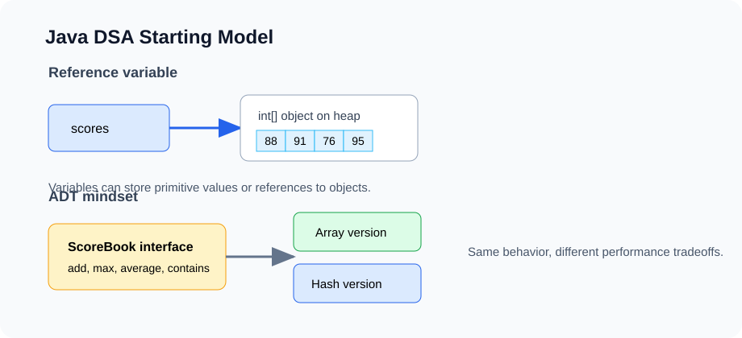

Lesson 1
How to Think About DSA in Java
Data structures and algorithms are not a list of tricks. They are a way to design software around operations: what do we need to store, what questions do we need to answer, and which operations must be fast?

Example first: a student scorebook
Imagine we are building a small scorebook for a tutoring class. We want to store quiz scores, add a new score, compute the average, find the highest score, and check whether a score exists.
int[] scores = {88, 91, 76, 100, 95};With only this one line, many design questions appear. How do we add another score if the array is already full? How expensive is it to search for a score? What if we want student names too? What if we want the top 3 scores quickly?
This is the reason DSA exists. Real programs are full of collections of data. Different collections make different operations cheap.
The operation-first mindset
Before choosing a data structure, list the operations. A data structure is useful only because it supports certain operations well.
| Need | Possible structure | Why |
|---|---|---|
| Fast index access | Array or ArrayList | get(i) is O(1) |
| Fast add/remove at front | Linked list or deque | No shifting required |
| Fast membership test | HashSet | Expected O(1) lookup |
| Keep items sorted | TreeSet or balanced BST | Search, insert, min, max are logarithmic |
| Repeated min/max | Heap / PriorityQueue | Remove priority item in O(log n) |
| Relationships | Graph | Models networks, maps, dependencies |
In this course, every new structure will be introduced through an interface first. The interface describes what the structure does. The implementation explains how it does it.
Interface first: a tiny scorebook ADT
An ADT, or abstract data type, describes behavior without exposing implementation details. Here is a possible scorebook interface:
interface ScoreBook {
void addScore(int score);
int size();
int max();
double average();
boolean contains(int score);
}This interface does not say whether scores are stored in an array, linked list, tree, or database. That is the point. First decide what operations the user needs. Then choose the representation.
Implementation 1: array-backed scorebook
A simple implementation can use a resizable array. We keep two pieces of state: the physical array and the logical number of scores currently stored.
class ArrayScoreBook implements ScoreBook {
private int[] data = new int[4];
private int size = 0;
public void addScore(int score) {
if (size == data.length) {
resize(data.length * 2);
}
data[size] = score;
size++;
}
public int size() {
return size;
}
public int max() {
if (size == 0) throw new IllegalStateException("empty scorebook");
int best = data[0];
for (int i = 1; i < size; i++) {
if (data[i] > best) best = data[i];
}
return best;
}
public double average() {
if (size == 0) throw new IllegalStateException("empty scorebook");
int total = 0;
for (int i = 0; i < size; i++) {
total += data[i];
}
return (double) total / size;
}
public boolean contains(int score) {
for (int i = 0; i < size; i++) {
if (data[i] == score) return true;
}
return false;
}
private void resize(int capacity) {
int[] next = new int[capacity];
for (int i = 0; i < size; i++) {
next[i] = data[i];
}
data = next;
}
}
This implementation is intentionally small. It already introduces the main pattern behind Java's
ArrayList: a backing array, a logical size, and occasional resizing.
What state does the algorithm need?
A strong DSA student learns to identify state. In max, the state is best. In
average, the state is total. In contains, the state is the current index
and whether we have already found the target.
MAX-SCORE(data, size):
best = data[0]
for i from 1 to size - 1:
if data[i] > best:
best = data[i]
return bestPseudo code is useful because it strips away syntax. If the pseudo code is confused, the Java code will also be confused.
Java details that matter for DSA
Primitive values vs references
Java has primitive values such as int, boolean, and double. It also has
references to objects, such as arrays, strings, lists, maps, and custom nodes.
static void changeFirst(int[] nums) {
nums[0] = 999;
}
public static void main(String[] args) {
int[] values = {1, 2, 3};
changeFirst(values);
System.out.println(values[0]); // 999
}The method receives a copy of the reference, but both references point to the same array object. This idea is essential for linked lists, trees, graphs, and any object-based data structure.
Static methods vs objects
Many early algorithm problems can be written as static methods because they do not need long-term object state.
static int sum(int[] nums) {
int total = 0;
for (int x : nums) total += x;
return total;
}Data structures usually need objects because they store state across many operations.
ArrayScoreBook book = new ArrayScoreBook();
book.addScore(88);
book.addScore(91);
System.out.println(book.max());Testing habit
Every assignment in this course should include tests. A test is a precise claim about behavior. For a method, test a normal case, an edge case, and a case likely to expose a bug.
static void checkMax() {
ArrayScoreBook book = new ArrayScoreBook();
book.addScore(5);
assert book.max() == 5;
book.addScore(-2);
book.addScore(10);
assert book.max() == 10;
assert book.contains(-2);
}
Java assertions are often disabled unless the program is run with -ea. For small assignments, that
is fine. Later, we can move to JUnit.
Why this matters beyond coding exercises
Technical work often involves arrays, tables, maps, graphs, and large datasets. DSA helps answer practical questions:
- If a dataset has one million rows, will this code finish?
- Should we sort first, build a map, or scan once?
- How much memory does this preprocessing step require?
- Can we model this data as a graph, such as users connected by interactions?
The goal is not only to pass coding interviews. The goal is to reason about computational cost when data gets large.
In-class exercises
- Extend
ScoreBookwithmin(). Write pseudo code before Java. - Add
countAbove(int threshold). Identify the state used by the algorithm. - Write three tests for
average(), including an empty scorebook case. - Explain which operations are fast and which operations scan the whole scorebook.